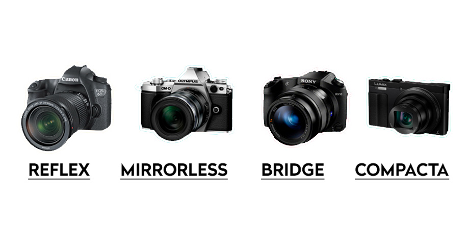
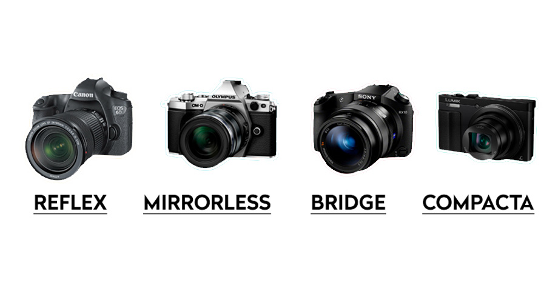
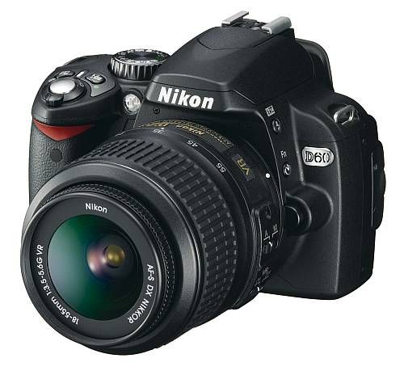
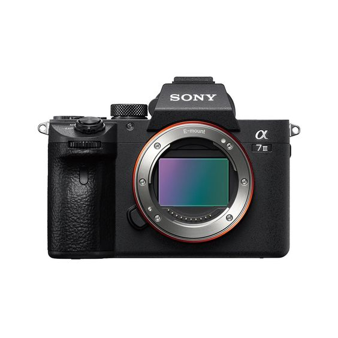
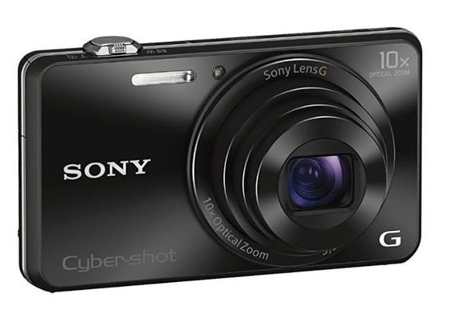
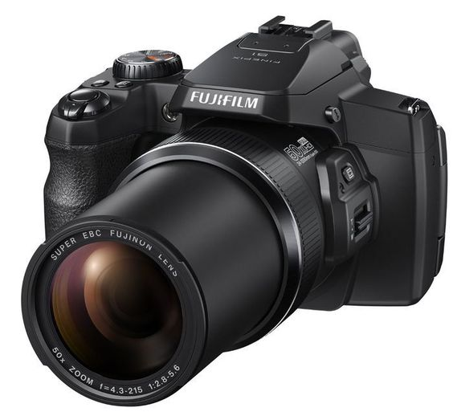
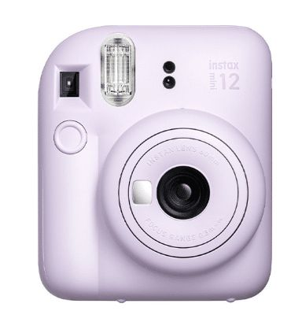
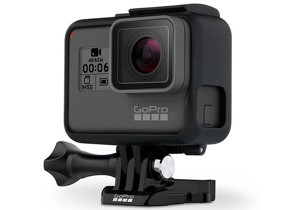

Hay diversos tipos de cámaras fotográficas, cada una diseñada para diferentes propósitos y niveles de experiencia fotográfica. A continuación, se presentan algunos de los tipos más comunes:

Hay diversos tipos de cámaras fotográficas, cada una diseñada para diferentes propósitos y niveles de experiencia fotográfica. A continuación, se presentan algunos de los tipos más comunes:

Cámaras Réflex Digitales (DSLR)
Las cámaras réflex digitales son las favoritas tanto de fotógrafos aficionados como profesionales. Permiten un control manual completo sobre la exposición y la composición, además de ofrecer una calidad de imagen excepcional. Las DSLR (Digital Single Lens Reflex) utilizan un espejo para reflejar la imagen hacia el visor óptico, lo que brinda una experiencia de visualización directa y precisa.

Cámaras Mirrorless
Las cámaras mirrorless, también conocidas como sin espejo, son una opción cada vez más popular. Se caracterizan por su diseño compacto y ligero debido a la ausencia de espejo y pentaprisma. En lugar de un visor óptico, utilizan pantallas LCD o visores electrónicos para mostrar la imagen en tiempo real. Son ideales para aquellos que buscan alta calidad de imagen en un cuerpo de cámara más portátil.

Cámaras Compactas
Las cámaras compactas, también llamadas cámaras de apuntar y disparar, son dispositivos sencillos y fáciles de usar. Son ideales para capturar momentos cotidianos y son una excelente opción para principiantes. Su diseño compacto las hace portátiles y perfectas para llevar a cualquier lugar.

Cámaras Bridge
Las cámaras bridge son una combinación entre las cámaras compactas y las réflex. Ofrecen una mayor versatilidad y control que las compactas, pero sin llegar al nivel de las réflex digitales. Son ideales para fotógrafos intermedios que desean explorar más opciones y ajustes sin complicarse con lentes intercambiables.

Cámaras Instantáneas
Las cámaras instantáneas son un clásico que ha recuperado popularidad en la era moderna. Estas cámaras imprimen instantáneamente la fotografía en papel poco después de tomar la imagen. Son perfectas para capturar momentos espontáneos y regalar fotografías físicas a amigos y familiares.

Cámaras de Acción
Las cámaras de acción están diseñadas para soportar condiciones extremas y capturar momentos en movimiento. Son resistentes al agua y a impactos, lo que las hace ideales para actividades deportivas y aventuras al aire libre. Además, su tamaño compacto facilita su montaje en cascos, bicicletas y otros objetos.

Cámaras de Teléfono Inteligente
Los teléfonos móviles modernos incorporan cámaras avanzadas que ofrecen una gran comodidad y calidad para la fotografía cotidiana.
Obra publicada con Licencia Creative Commons Reconocimiento Compartir igual 4.0